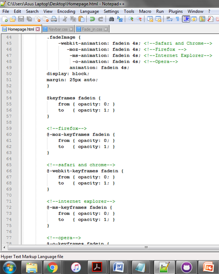
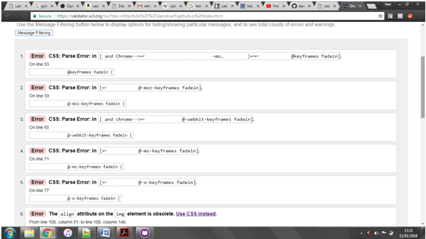

Current web specifications and standards in place are there for many reasons but as a brief overview they ensure web pages will function correctly on a variety of computers, tablets, phones and web browsers. This therefore means more access to the web pages and widens the target audience of the site. W3C Standards encourage the use of Style sheets such as 'Cascading Style sheets' otherwise known as CSS as it increases the loading time, uses less bandwidth by decreasing the page file size. CSS allows ease of editing by allowing multiple pages to use the same style coding. Styling such as changing background colour or images and setting it across of a number of pages with a simple tag. Saving a huge amount of time in the long run. Knowing this I ensured to make my CSS suitable for us on all pages and used it as the template throughout my coding.
In order to allow fair accessibility, Web Accessibility Standards were put in place. Websites must comply with the standards of accessibility contained in W3C WAI (World Wide Web Consortium Web Accessibility Initiative) The law is as follows, the '508 Law';
"In 1998, Congress amended the Rehabilitation Act to require Federal agencies to make their electronic and information technology accessible to people with disabilities. Inaccessible technology interferes with an individual's ability to obtain and use information quickly and easily. Section 508 was enacted to eliminate barriers in information technology, to make available new opportunities for people with disabilities, and to encourage development of technologies that will help achieve these goals. The law applies to all Federal agencies when they develop, procure, maintain, or use electronic and information technology. Under Section 508 (29 U.S.C. ' 794d), agencies must give disabled employees and members of the public access to information that is comparable to the access available to others." Check here
Although if your business is a private operation and not legally required to have the 508 Law rules incorporated it is important to appreciate that more than 750 million people across the world have some type of disability. Not adhering to the needs of these people is reducing the amount of visitors to your site or at least reducing your target audience which is a hindrance worth avoiding. However the 508 law requires stricter coding skills as your code must suit a variety of browsers. A good knowledge of major browsers and also requires testing on windows and mac machines to check compatibility in cross-over platforms, which makes testing more time consuming and ludacrus.
It is also important to remember that all the code on any site should validate to W3C specifications which can be done via the following link - ' https://validator.w3.org/'. Following both of these standards I tried to ensure my site was easy to use by simplifying the navigation of the site, using fairly large and clear text fonts and generally keeping styling to a minimum as to avoid over complications.
In order for my website to work across multiple platforms I had to edit certain areas of code where applicable to suit the different browsers needs. Here is an example of multiple browser compatibility:


After correcting any probelsm shown I checked again to receive validation, this was continued on each page: